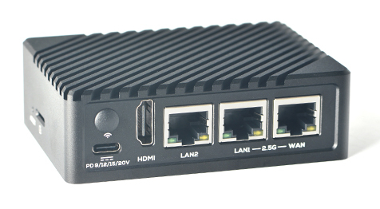
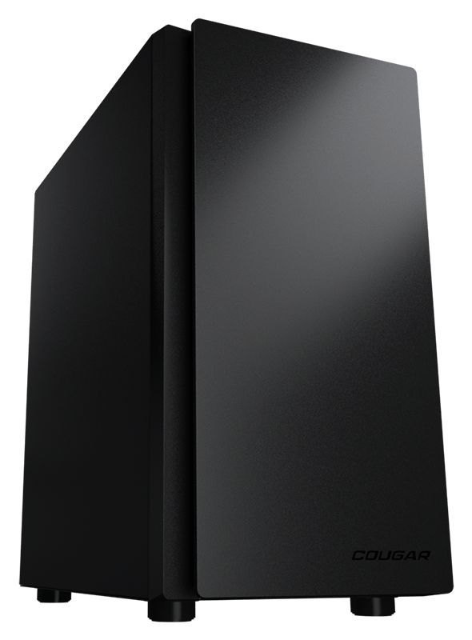
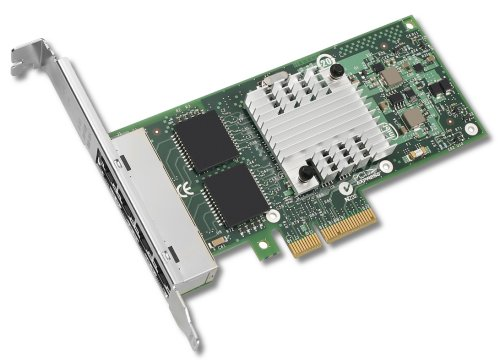
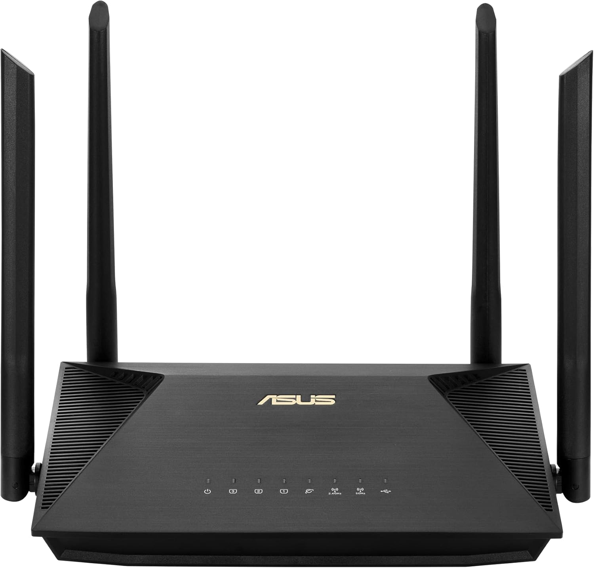
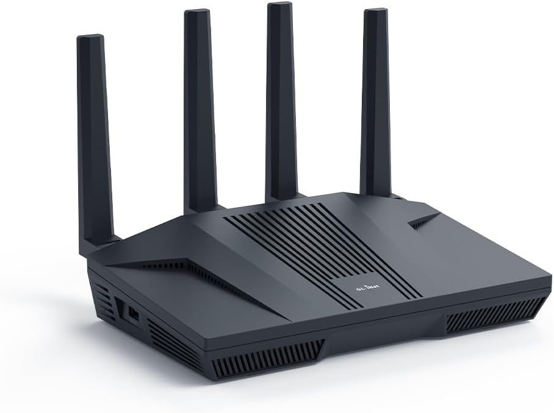
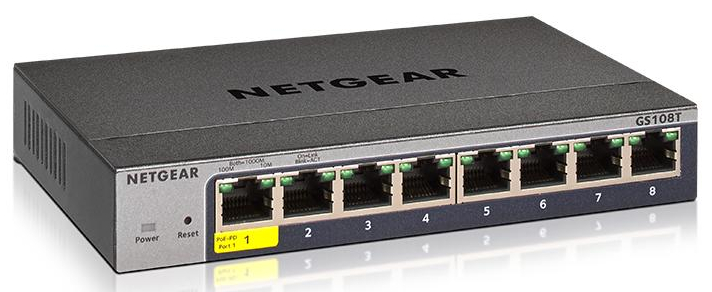
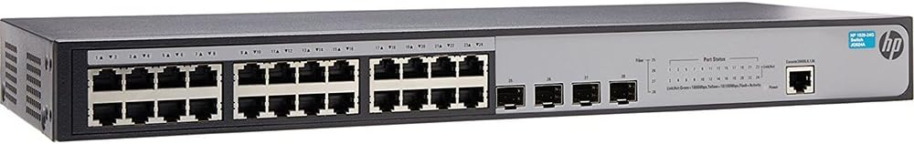

The Hardware
Routers (non-wireless)

FriendlyElec NanoPi R6S (
Manufacturer's link
)

✚

PC (x86) with a
Intel i340 (RJ45 version)
quad port network card
Routers (wireless capable)
TP-LINK Archer C5 v1.20 (
Manufacturer's link
)

ASUS RT-AX53U (
Manufacturer's link
)

GL.iNet GL-MT6000 aka: Flint 2 (
Manufacturer's link
)
Switches

Netgear GS108T V3 (
Manufacturer's link
) - 8 port switch

HPE OfficeConnect 1920 24G aka: JG924A (
Manufacturer's link
) - 24 port + 4 SFP switch